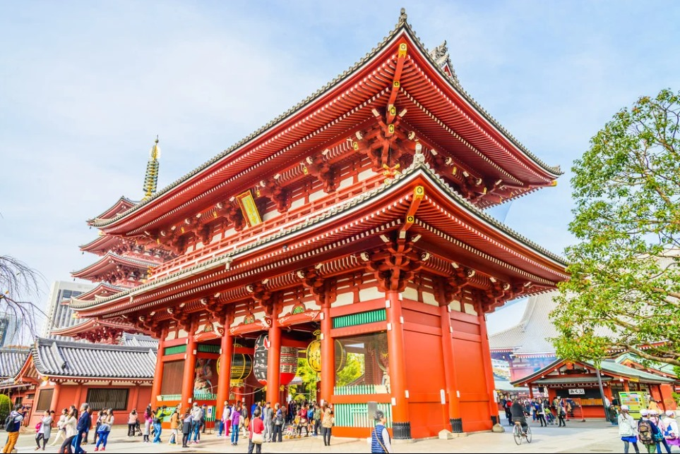
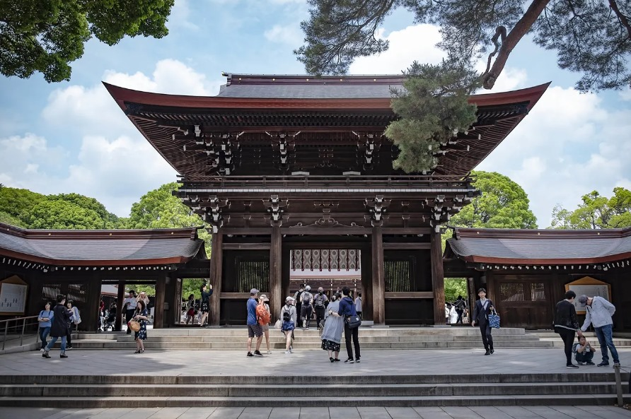
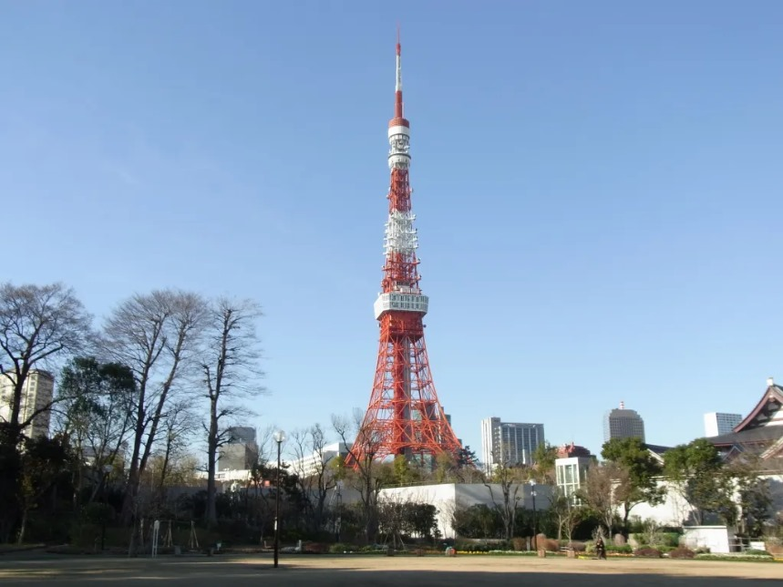

Sua próxima viagem:
Conheça Tóquio
Tóquio, a movimentada capital do Japão,
combina o estilo ultramoderno com o tradicional,
desde arranha-céus iluminados por neon a templos históricos.
Para os apaixonados por vista incríveis
Descubra 3 pontos turísticos imperdíveis de Tóquio
Em Tóquio existem vários pontos turísicos famosos a serem visitados,
muitos expressam a cultura do país, já outros demostram sua tecnologia e evolução,
sendo um país desenvolvido.
1. O Santuário Xintoísta Meiji
O Santuário Xintoísta Meiji, localizado em Shibuya, Tóquio,
é o templo xintoísta que é dedicado aos espíritos deificados do
Imperador Meiji e sua esposa, a Imperatriz Shōken.
O opulento santuário Meiji é conhecido por seu altíssimo portão e
pelas florestas circundantes.
Bom para:
- História
- Memorável
- Família
- Fotos
2. Torre de Tóquio

A Torre de Tóquio é uma torre de comunicação e um belveder
localizado no distrito Shiba-koen em Minato, Tóquio, Japão.
Com 333 metros de altura, é a segunda maior estrutura artificial do Japão.
Esta construção foi inspirada na Torre Eiffel com estrutura treliçada,
pintada de branco e laranja para fazer cumprir com os regulamentos da segurança aérea.
Erguida em 1958, a torre é uma das principais fontes da receita de turismo de Tóquio.
Bom para:
- Memorável
- Fotos
3. Cruzamento de Shibuya

O Cruzamento de Shibuya é um cruzamento no distrito de Shibuya, em Tóquio, no Japão,
conhecido por suas faixas de pedestres, uma das quais cruza diagonalmente o centro da própria interseção.
Está localizado em frente à saída Hachikō da Estação de Shibuya
e bloqueia completamente o tráfego de veículos por 55 segundos para permitir que os pedestres atravessem o cruzamento com segurança.
A estátua do cão Hachikō, situada entre a estação e o cruzamento, é um ponto de encontro bastante popular e quase sempre lotado.
Bom para:
- Memorável
- Família
- Fotos
a, população, segurança, tecnologia e história de Tóquio
contribuem para a constituição de uma magnífica cidade
que tambem serve como ponto turistico